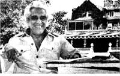
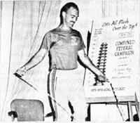

"Years after I left the hectic business world of Manhattan and moved into the New York countryside to operate a resort hotel . . . it gradually came to me: Instead of everyone bowing down to the giant corporations that are trying to take over the world ... individual entrepreneurship is going to win out and conquer the system. The big conglomerates are dinosaurs . . . and soon they'll be extinct. Eventually, all the goods and services we need will be provided by the people themselves in a vast network of small family-type businesses."
The man talking is Mr. Robert Schwartz . . . and he is obviously conwinced that individuals-"little people"-can originate far more "better ideas" than big corporations ever will. Furthermore, he's backing his beliefs with a new School for Entrepreneurs that teaches ordinary folks how to market those ideas.
"The giant industries are cranking out inferior junk products that we don't need, but that we're conned into buying," says Mr. Schwartz. "While, at the same time, there are thousands of goods and services-such as energy-efficient automobiles, better foods, even day-care centers and lower-cost health services-that we do need and which the best brains of our age are anxious to develop. The problem is that today's most creative minds are all too frequently 'locked out' of access to the very situations they could help the most simply because they don't know how to get the attention of the men in our corporate structure . . . men who are just as anxious to finance those creative minds' bright new ideas."
Schwartz's School for Entrepreneurs attempts to rectify this ridiculous situation by showing individuals how to convert their dreams into "presentation packages" that staid corporate financial planners can understand, appreciate, develop . .. and eventually market. Graduates of the course say his approach is a totally new concept in itself . . . and that it works. You can make up your own mind about the value of Schwartz's program after you've read over its promotional literature, available at no charge from The School for Entrepreneurs, Tarrytown House Executive Conference Center, East Sunnyside Lane, Tarrytown, New York 10591.-JR.
"On July 4 I'll do about 100,000 sit-ups as a promotion for a barbell company in Pennsylvania. Then I'll drive to New York for a swim across the Hudson River. It'll be a short swim, just a mile or so . . . but my hands and feet will be tied. Next I plan to join a 400-mile bicycle race across the state of Iowa. The other folks will use two-wheelers, but I'll be on a unicycle. And after that-around January 1, 1979-I'll ski across Canada from the Pacific to the Atlantic with my white arctic wolf, Pierre, running along at my side."
We were listening, dumbfounded, as Alan M. Jones ( alias "Captain A. Merica" ) was telling MOTHER some of his plans for the next few months. Mr. Jones is the amazing person who keeps popping up all over the country to swim rivers (lengthwise!) . . . lift enormous weights (for hours at a time) . . . jump rope (for days and days without sleep) . . . and accomplish other fantastic feats that would astound statisticians even at the Guinness Book of World Records!
"It's just a lot of fun," Alan says about his hobby. "I want to show America that anyone can keep his body in shape with just a little good nutrition and regular exercise. The human body can accomplish much more than most people realize, and I enjoy proving it."
Mr. Jones first became aware of what physical fitness is all about when he joined the Marine Corps in 1969. But after eight years in the Corps, he had progressed far beyond its idea of "being in shape". And so he began turning his finely honed abilities into a full-time vocation of telethon, benefit, and even county fair appearances.
During the next year or so, Alan Jones plans to hike, bicycle, swim, kayak, and cross-country ski completely around the world. And after that? Well, we wouldn't be surprised to see him start to leap tall buildings with a single bound sometime in the early 1980's! -JR.
Christopher Bird was born into an oldline Bostonian family and educated at Harvard, yet so far he's managed to lead quite an unconventional life. He's fluent in several languages, and has-at various times in his career-translated a Russian novel, been an art and drama critic in Hawaii and a Time correspondent in Yugoslavia, and worked for the CIA.
Now Chris lives in Washington, D.C. with his wife Lois, and is forging a new trail "into a wilderness just beginning to be explored": the mysteries of the natural world. In 1973, he and Pater Tompkins published the best-selling book, The Secret Life of Plants, and the coming spring will see the release-after six years of research into yet another fascinating field of unexplained phenomena-of Chris' new book, The Divining Hand: The 500-Year-Old Mystery of Dowsing.
The art of dowsing, Chris says, can be traced in various languages all the way back to the Gutenberg Bible. "And-through most of its history-it's stirred raging controversies between those who've asserted that it really does work and those who've held it to be all humbug and charlatanry."
Chris, who has become a trustee of the American Society of Dowsers, is one of the people who no longer doubts that divining works. Last summer, for instance, the booming-voiced author visited California during the severe drought only to learn that "the biggest driller in northern California is a dowser who employs four other "water witches" full time . . . even though the National Water Well Association (to which he belongs) repudiates dowsing as a means of finding water! "-Virginia Treherne-Thomas.
Are you up on the latest doings of someone (such as any of those innovative pioneers featured in MOTHER'S Plowboy Interviews) who's achieved recognition in a field regularly covered by this magazine? If so, send us a tightly written 200-word report on that person (along with a clear, snappy black-and-white photograph), and-providing your report is used in NEWS WORTHIES-we'll gladly send you a flat cents50 ( cents25 without that photograph). Send your contributions to NEWSWORTHIES EDITOR. THE Mother Earth News, P.O. Box 70, Hendersonville, N.C. 28739..
|
PHOTO BY NEIL BERGER |
 PHOTO BY TREHERNE THOMAS |
 |
|
|
|
|